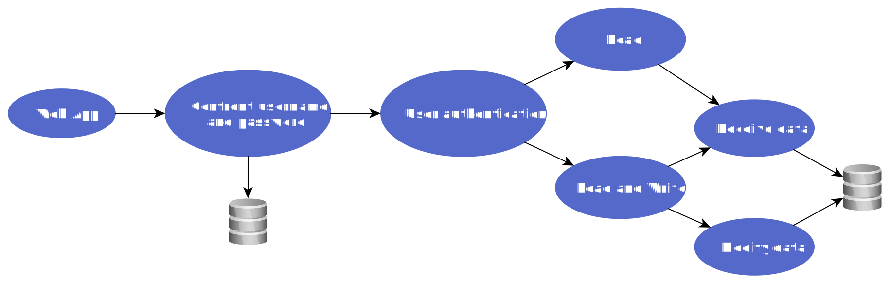

Argumento: Dustbin IoT
Sistema inteligente para la gestión de la recogida de basura en una Smart City.
Descripción del Proyecto
Tras las investigaciones realizadas por los medios de comunicación sobre la ejecución de las tareas asignadas a la figura del recolector de basura al interno del AMA municipal (en adelante, el "cliente" o "empresa"), surgen problemas en el desempeño de las tareas asignadas a los empleados en servicio con la consecuente discontinuidad del propio servicio en toda el área de competencia y, en concreto, en el contexto de la recogida de residuos. En particular, una parte del personal de los recolectores de basura está cumpliendo solo parcialmente con sus funciones, resultando fuera del control de la propia empresa.
Cabe señalar, además, que el cliente actualmente utiliza un sistema basado en tecnología QR Code que, al utilizar aplicaciones para dispositivos móviles en los dispositivos asignados al operador, no detecta de manera efectiva el desempeño del servicio. De hecho, a través de las aplicaciones antes mencionadas, el empleado en servicio garantiza la recolección de residuos al interactuar con los códigos QR presentes en los contenedores de basura, salvo no completar la tarea que le fue asignada sucesivamente.
De estas premisas se deriva la necesidad del cliente de un sistema de control eficaz para volver a garantizar la continuidad del servicio, así como los objetivos de este proyecto.
El Reto
Como parte de las especificaciones de IoT-A, es necesario desarrollar un prototipo que contribuya al desarrollo de una solución inteligente para la optimización de las tareas de recogida de residuos, respetando los requisitos planteados arriba.
Los datos recopilados por los sensores de los contenedores de basura deben ser enviados a la base de datos de la aplicación para permitir su posterior visualización.
El Enfoque y Solución
Como primer enfoque, se utilizó el marco Node-Red para crear un prototipo antes del verdadero desarrollo de la aplicación web en la plataforma Django. El siguiente video muestra el resultado obtenido en la primera semana.
La solución final es una red de "nodos sensores" (es decir, dispositivos que incorporan un sensor de detección) colocados en cada cesto de basura de la ciudad que se comunican en la red a través de gateways especiales, proporcionando datos en tiempo real a un servidor. Los datos también se almacenan en una base de datos relacional con diferentes niveles de autorización y se pueden consultar H24 a través de una interfaz web. y las actualizaciones de esta aplicación web se pueden realizar sin interrumpir el servicio. También está previsto el control remoto de los nodos antes mencionados.
La siguiente imagen ilustra el flujo principal de la aplicación web. Tenga en cuenta que solo el administrador tiene permiso de escritura.
Los datos del sensor se envían a través de una computadora (pc, raspberry o arduino) con acceso a internet y dedicada a la recopilación, procesamiento y envío de la información final en formato JSON a la base de datos. Todo esto lo hace db-filler (otro programa que desarrollé) que permite realizar estas actividades sin comprometer la integridad de los datos o la seguridad de la base de datos. Con respecto a la seguridad, además de la gestión de errores, permite el acceso a la base de datos mediante una contraseña que se solicita al primer inicio de sesión o en caso de reinicio del ordenador.
Antes de escribir los nuevos datos, db-filler consulta la base de datos mediante queries. Esto permite identificar si un sensor es nuevo y se debe crear una nueva instancia o si ya existe y se debe actualizar.
Los Resultados
El resultado es una aplicación web que resuelve las necesidades del cliente H24 al día por un precio inferior a 50 € por cada cesto de basura . El producto final que he realizado es open source y está disponible online así como su prototipo.
El proyecto Dustbin IoT es escalable ya que consiente la integración de nuevas funcionalidades permitiendo que esta aplicación web mejore progresivamente. A continuación se muestra una lista de algunas de las características que podrían implementarse para mejorar este programa.
- Envío automático de correos electrónicos o notificaciones a los operadores para comunicar la asignación de una orden de servicio.
- Auto generación de órdenes de servicio en base a los siguientes parámetros: operadores con menor carga de trabajo, capacidad de los cesto y días aptos para la recogida (excluyendo feriados y fines de semana).
- Cálculo de la ruta más eficiente para realizar la recogida y posibilidad de visualizarla en un mapa con acceso a GPS desde la aplicación.
- Soporte en varios idiomas para una mayor comprensión por parte de los operadores.
- Tutorial sobre cómo utilizar la aplicación al primer acceso, repetible si necesario.
- Posibilidad de identificar quién es el responsable del día actual y si es necesario contactarlo desde la aplicación.
Testimonio
Programmatore brillante e con la determinazione nel sangue, Ariel è il membro ideale di qualsiasi team: contribuisce in modo decisivo durante tutte le fasi del progetto e porta a termine i propri task in modo impeccabile e puntuale. Questi fattori, uniti al livello di competenza raggiunto da Ariel nell'ambito della programmazione in python e dei database relazionali, hanno permesso lo sviluppo di un sistema IoT per la raccolta intelligente dei rifiuti urbani in tempi rapidissimi. Alla conclusione del progetto Ariel ha comunque continuato ad implementare da solo il prodotto creandone una vera e propria versione 2.0.
¿Quieres que te ayude con tu proyecto?
Puedes enviarme información sobre tu proyecto y solicitar una colaboración, te responderé lo antes posible. Si alguno de mis proyectos le resultó útil o si aprendió algo del código fuente y quiere agradecerme considere regalarme una taza de café.